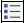

2. Membuat bullet dan nomor
Anda dapat membuat daftar bullet atau daftar nomor secara cepat, menggunakan
tombol Bullets ( ) atau Numbering ( ). Cara selengkapnya:
1. Letakkan kursor pada lokasi yang Anda inginkan.
2. Klik tombol Bullets atau Numbering.
3. Setelah tombol tersebut aktif, tuliskan teks pertama Anda. Misalnya JAMBU
atau Ikan.
4. Tekanlah Enter untuk memulai baris baru. Setiap kali Anda menekan Enter, teks
bergerak ke baris baru dan bullet baru atau nomor baru akan ditambahkan pada
permulaan baris.
5. Tuliskan teks selanjutnya. Misalnya MELON atau Tempe.
6. Dan seterusnya, untuk menyelesaikan daftar dan kembali ke mode penulisan
normal, tekan Enter dua kali.
Gambar 5.5 menunjukkan contoh pemakaian daftar bullet dan daftar nomor.
Gambar 5.5 Contoh pemakaian daftar bullet dan daftar nomor
Setelah Anda menyelesaikan pembuatan bullet, ada beberapa hal yang dapat Anda
modifikasi pada daftar itu. Misalnya Anda dapat memilih tipe bullet atau tipe nomor,
bahkan Anda bisa memilih untuk menggunakan huruf sebagai pengganti nomor.
Anda juga dapat memilih bermacam-macam tipe daftar. Untuk melakukan
pengaturan daftar bullet:
1. Letakkan kursor pada daftar bullet atau daftar angka yang Anda inginkan.
2. Aktifkan perintah Format _ Bullets and Numbering. Tampil kotak dialog
List Properties. Gambar 5.6.
Gambar 5.6 Kotak dialog List Properties
3. Kemudian tentukan pengaturan yang Anda inginkan:
• untuk menggunakan bentuk bullet seperti yang ada pada theme yang
sedang digunakan, aktifkan pilihan Use pictures from current
theme.
• untuk menggunakan gambar tertentu sebagai bullet, klik pilihan
Specify picture, lalu tuliskan nama file gambar yang Anda
inginkan. Atau Anda bisa menentukan file tersebut pada kotak
dialog Select Picture yang muncul kalau Anda klik tombol Browse.
Gambar 5.7 Kotak dialog Select Image
• untuk menentukan jenis bullet yang akan dipakai, klik tombol Style ,
muncul kotak dialog Style .
Gambar 5.8 Kotak dialog Style
• Jika Anda menginginkan daftar dengan nomor, klik tab Numbers,
seperti yang terlihat pada Gambar 5.41. Anda dapat memilih sebuah
daftar tanpa nomor/huruf, dua macam nomor dan tiga macam huruf.
Setelah memilih salah satunya, Anda bisa menentukan nomor/huruf
awalnya pada kotak pilihan Start At. Anda juga bisa menentukan jenis
nomor/huruf yang dipakai dengan klik tombol Style yangakan
menampilkan kotak dialog Style.
Gambar 5.9 Skema nomor atau huruf tab Numbers
• Kalau dari kedua tab (Picture Bullets dan Numbers ) Anda tidak
menemukan yang Anda inginkan, klik tab Other untuk memilih tipe
daftar lainnya. Anda dapat membuat daftar Definition, daftar Directory,
atau daftar Menu.
Gambar 5.10 Tab Other
• Anda juga bisa menentukan jenis nomor/huruf yang dipakai dengan
klik tombol Style yangakan menampilkan kotak dialog Style.
4. Klik OK, pengaturan Anda akan diberlakukan.
Untuk memodifikasi daftar, selain menggunakan perintah Format _ Bullets and
Numbering, Anda dapat memakai klik kanan daftar dan memilih perintah List
Properties. Akan tampil kotak dialog List Properties seperti Gambar 5.38 di atas.
Selanjutnya Anda bisa melakukan pengaturan bullet sesuai yang Anda inginkan.
Copyright © Herlan Lesmana
Created with the Freeware Edition of HelpNDoc: Easily create PDF Help documents